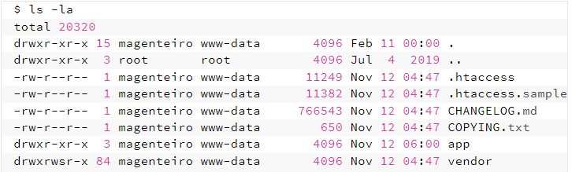
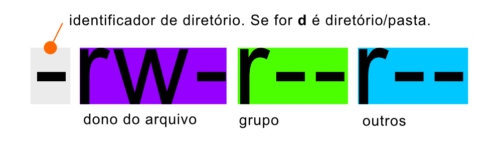

◉ Permissões de arquivos
Quando falamos de permissões em sistema Linux (ou MacOs) logo entendemos que vamos usar os comandos chmod e chown em algum terminal.
Mas entender como eles funcionam de fato é algo que geralmente é postergado por anos.
Se você quiser entender como eles funcionam, para que servem, e aprender isso de um jeito simples, invista 10 minutos na leitura e compreensão
deste artigo.
Erros de permissão, sejam eles no Magento, no Symfony, no WordPress ficarão mais fáceis de serem compreendidos, e você entenderá que chmod 777
não é a solução correta para seus problemas.
➤ Grupo e dono: todo arquivo tem um
Quando um arquivo é criado ele possui um dono (quem o criou) e um grupo. Todo usuário pertence a um ou mais grupos.
Digitando whoami (quemsoueu) você descobrirá o nome do usuário atual, e digitando groups descobrirá a quais grupos este usuário pertence.
$ whoami
magenteiro
$ groups
magenteiro www-data
O comando ls -la listará todos os arquivos do diretório atual, trazendo informações sobre o nome do dono, o grupo que cada arquivo e diretório
pertencem e quais permissões cada um deles tem sobre cada item.

• Primeira coluna (drwxr-xr-x)
Traz informações sobre as permissões que o dono, o grupo e outros usuários tem sobre o item. A primeira letra indica se o item é um diretório
(d) ou um arquivo (-).
• Terceira coluna (magenteiro, root, etc)
Nome do usuário que é o dono do arquivo ou diretório
• Quarta coluna (www-data, root, etc)
Nome do grupo ao qual o arquivo ou diretório pertence
➤ Entendendo as permissões rwx
As permissões de um arquivo são divididas na seguinte ordem:

Cada letra representa uma permissão que cada um tem sobre o arquivo ou pasta.
As letras geralmente são:
• r – read (leitura)
• w – write (escrita)
• x – execute (execução)
E há ainda a letra s que é menos utilizada. Ela representa permissão de ajuste de user id (setuid). Esta é uma permissão especial que permite
que qualquer usuário execute o arquivo como se fosse o dono. Em outras palavras, supondo que o dono do arquivo seja o root, qualquer usuário
poderia executá-lo com o comando sudo.
No exemplo da imagem acima, o dono do arquivo possui permissão para ler (r) e escrever/modificar(w) o arquivo. Usuários que estiverem no
mesmo grupo que este arquivo pertence poderão apenas ler(r) o arquivo. Enquanto outros usuários, mesmo que não sejam o dono, nem façam parte
deste grupo, poderão apenas ler (r) o arquivo.
➤ Entendendo os erros de permissão
Quando nosso servidor web (apache ou nginx por exemplo) serve uma aplicação (PHP por exemplo), ele faz isso usando um usuário que está
inserido em um ou mais grupos. Sendo assim, se este usuário não tiver permissão de leitura nos arquivos da nossa aplicação, certamente teremos
erros de permissão.
Permissão de escrita também é necessária quando nossa aplicação tenta escrever arquivos de sessão, gerar arquivos de cache, ou mesmo quando
fazemos upload de um arquivo e o mesmo tenta ser salvo em determinada pasta que nosso servidor web não possui a permissão necessária.
➤ Alterando as permissões (um jeito simples de entender)
O comando chmod é o responsável por alterar as permissões de um arquivo ou pasta. Geralmente este comando é seguido de uma sequência de 3
números (ex: chmod 754 arquivo.txt).
No entanto, existe uma forma um pouco mais fácil de utilizá-lo e que facilita bastante a nossa vida.
chmod [tipo][operador][permissão] arquivo
Onde tipo pode ser:
• u: dono do arquivo (user who owns it)
• g: grupo do arquivo (group)
• o: outros (others)
• a: todos os acima (all)
Os operadores podem ser:
• +: o sinal de mais adicionará as permissões a seguir
• -: o sinal de menos removerá as permissões a seguir
E a permissão, pode ser a combinação de uma ou mais das letras que já vimos acima.
• r: para leitura (read)
• w: para escrita (write)
• x: para execução (execute)
Exemplos:
• chmod u+rwx arquivo.txt
Adiciona permissão de leitura, escrita e execução para o dono do arquivo
• chmod g-w arquivo.txt
Remove permissão de escrita para pessoas inseridas no grupo ao qual o arquivo pertence
• chmod a+r arquivo.txt
Dá permissão de leitura para todo mundo
• chmod u+x,g-w,o+r arquivo.txt
Acrescenta permissão de execução para o dono, remove permissão de escrita para o grupo, e adiciona permissão de leitura para outros.
• chmod -R u+rw diretório
Dá permissão de leitura e escrita para o dono em todos os arquivos e diretórios dentro de uma pasta recursivamente.
• chmod o-rwx *.sql
Remove todas as permissões de que não é o dono nem faz parte do grupo, em todos os arquivos do diretório atual com extensão .sql.
➤ Alterando o dono e o grupo
Por fim, temos o comando chown (change owner) que nos permite alterar o usuário e/ou grupo de um arquivo ou pasta.
• chown magenteiro:www-data arquivo.txt
O dono passa a ser “magenteiro” e o grupo “www-data”
• chown :www-data arquivo.txt
O grupo passa a ser “www-data” e o dono permanece o mesmo
• chown magenteiro arquivo.txt
O dono passa a ser “magenteiro” e o grupo permanece o mesmo
• chown -R :www-data diretorio
Altera o grupo de um diretório e todos seus arquivos e subpastas recursivamente.